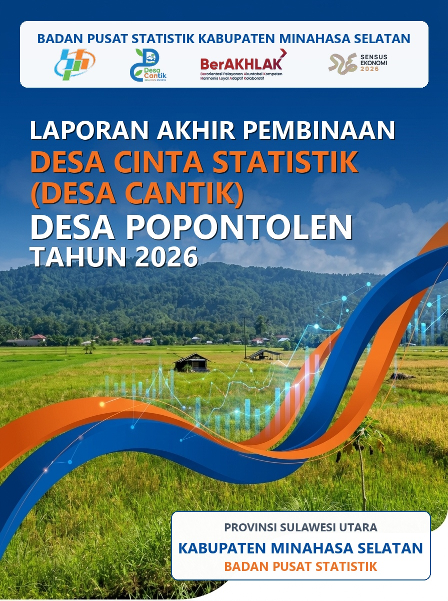
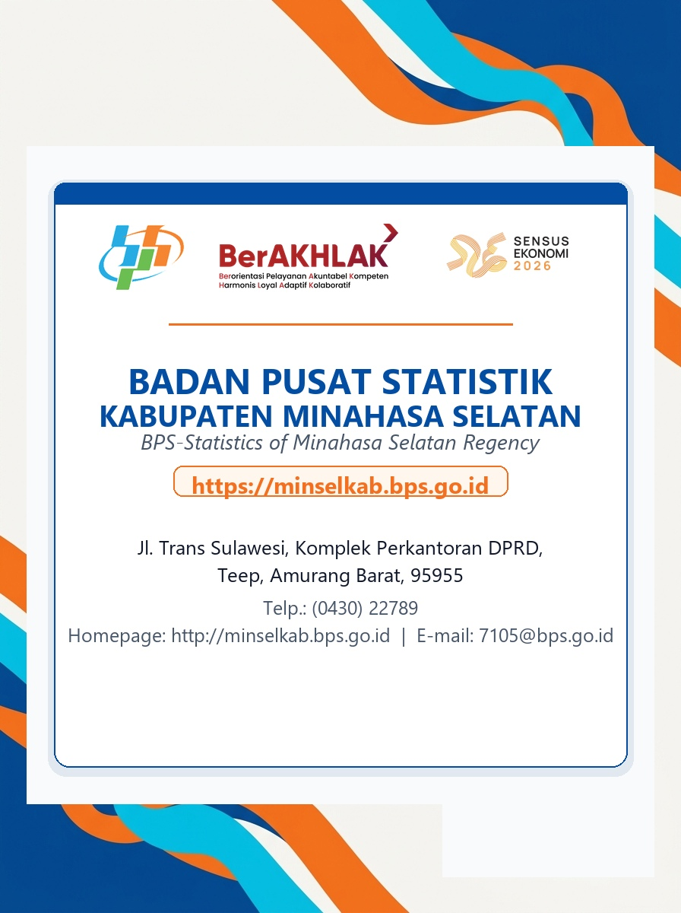

Puji dan syukur kami panjatkan kehadirat Tuhan Yang Maha Kuasa, atas rahmat dan karunia-Nya sehingga kami dapat menyusun dan menyelesaikan Laporan Pembinaan Desa Cinta Statistik (Desa Cantik) di Desa Popontolen, Kecamatan Tumpaan Kabupaten Minahasa Selatan dapat diselesaikan dengan tepat pada waktunya.
Laporan ini disusun untuk memenuhi rangkaian Pembinaan Desa Cantik 2026 yang diselenggarakan oleh Badan Pusat Statistik (BPS). Proses penyusunan laporan ini tidak terlepas dari peran banyak pihak yang telah membantu proses pembinaan Desa Cantik di Desa Popontolen. Oleh karena itu, pada kesempatan ini kami mengucapkan terima kasih yang sebesar-besarnya kepada seluruh pihak yang turut serta dalam pembinaan Desa Cantik ini.
Kami menyadari bahwa penyusunan laporan ini masih jauh dari kesempurnaan. Kritik dan saran yang membangun sangat kami harapkan untuk perbaikan tahap pembinaan Desa Cantik berikutnya. Demikian, semoga laporan ini dapat bermanfaat untuk kemajuan BPS dan kemandirian statistik di Desa Popontolen.
Berdasarkan Undang-Undang Nomor 6 Tahun 2014 tentang Desa dan Peraturan Presiden Nomor 39 Tahun 2019 tentang Satu Data Indonesia, pemerintah desa menjadi penyelenggara kegiatan statistik di wilayahnya masing-masing sehingga peran desa sebagai satuan wilayah terkecil menjadi sangat penting. Hal ini karena desa tidak lagi menjadi objek pembangunan, melainkan sebagai subjek dan ujung tombak pembangunan. Oleh karena itu, sebagaimana tertuang dalam Rencana Pembangunan Jangka Menengah Nasional (RPJMN) periode 2020-2026, diperlukan penguatan tata kelola pemerintahan desa dalam upaya pengembangan wilayahnya guna mengurangi kesenjangan dan menjamin pemerataan. Kebijakan desentralisasi dan otonomi daerah menjadi instrumen utama dalam memberikan peluang bagi pemerintah desa untuk membangun desa serta meningkatkan kemandirian dan daya saing desa. Dalam membangun desa, berbagai potensi desa yang dimiliki merupakan modal bagi desa untuk melakukan pembangunan.
Saat ini di desa terdapat berbagai sistem aplikasi (Prodeskel, SDGS Desa, SIK-NG, dst) yang berasal dari berbagai kementerian pusat dan dinas daerah. Sementara, Aparat Desa sebagai narasumber atau produsen data dari berbagai sistem aplikasi tersebut. Dari berbagai sistem yang ada, seharusnya desa memiliki data yang lengkap dan akurat sebagai landasan informasi dalam pengambilan kebijakan pembangunan di desa. Selain itu, permasalahan lainnya adalah mengenai relatif masih rendahnya kualitas dan kapasitas sumber daya manusia (SDM) di pemerintah desa dalam hal pengelolaan data desa. Hal ini berdampak pada rendahnya literasi data di tingkat desa yang pada akhirnya berpengaruh pada komitmen pemerintah desa untuk mengoptimalkan pemanfaatan data dalam kebijakan pembangunan, yang pada gilirannya dapat berdampak pada pengambilan kebijakan yang tidak tepat sasaran.
Data statistik yang dikumpulkan di tingkat desa seharusnya dapat dikelola dan dimanfaatkan oleh pemerintah desa. Selain itu, pengelolaan dan pemanfaatan data desa juga seharusnya selaras dengan prinsip Satu Data Indonesia. Untuk mewujudkannya tidak hanya diperlukan koordinasi dengan penyelenggara kegiatan statistik dan sinkronisasi proses penyelenggaraannya di tingkat desa, tetapi juga diperlukan peningkatan literasi statistik pemerintah desa dalam rangka menjadikan mereka sebagai subjek dalam pengelolaan dan pemanfaatan data di tingkat desa.
Badan Pusat Statistik (BPS) sebagai leading sector dalam pengembangan statistik memiliki peran penting dalam peningkatan literasi tersebut. Sebagaimana diamanatkan dalam Undang-Undang Nomor 16 Tahun 1997 tentang Statistik, BPS berkewajiban untuk memberikan pembinaan statistik kepada Kementerian/Lembaga/Satuan Kerja Perangkat Daerah/Institusi Lainnya, termasuk hingga tingkat desa, melalui sistem statistik nasional (SSN) yang berkesinambungan sebagai salah satu bentuk kontribusi dalam peningkatan literasi statistik guna mendukung pembangunan nasional.
Oleh sebab itu, sebagai salah satu perwujudan amanat UU tersebut adalah dengan dilaksanakannya suatu kegiatan pembinaan statistik sektoral di tingkat desa secara berkesinambungan dan komprehensif, yaitu Program Pembinaan Statistik Sektoral Desa Cinta Statistik (Desa Cantik). Dalam mendukung upaya tersebut, BPS Kabupaten Minahasa Selatan sebagai salah satu Pembina Desa Cantik melaksanakan pembinaan Desa Cantik di Desa Popontolen Kecamatan Tumpaan, Kabupaten Minahasa Selatan.
Desa Popontolen termasuk salah satu Desa dalam Kecamatan Tumpaan dengan luas wilayah 365 ha. Jumlah penduduk sudah mencapai 1.570 jiwa yang merupakan penduduk tetap, dengan jumlah penduduk laki-laki 816 jiwa dan perempuan 754 jiwa. Luasan wilayah yang begitu potensial saat ini sudah dikembangkan dengan baik oleh masyarakat Desa Popontolen. Terdapat 569 keluarga. Keseharian masyarakat Desa Popontolen adalah bertani kesuburan tanah yang luas. Oleh karena itu, hampir sebagian besar penduduk di Desa Popontolen bermata pencaharian sebagai petani karena letak geografis yang sangat mendukung.
Berdasarkan pedoman dari BPS RI terkait pelaksanaan Program Desa Cinta Statistik (Desa Cantik) Tahun 2026, BPS Kabupaten Minahasa Selatan telah membentuk dan mengesahkan Tim Pembina Desa Cantik melalui penerbitan Surat Keputusan (SK) Kepala BPS Kabupaten Minahasa Selatan. Setelah tim terbentuk, langkah awal yang dilaksanakan adalah mengadakan rapat koordinasi internal guna menyusun kerangka kerja dan strategi pembinaan, yang kemudian ditindaklanjuti dengan penyampaian surat pemberitahuan resmi kepada Pemerintah Daerah Kabupaten Minahasa Selatan dalam rangka penentuan lokus desa binaan. Berdasarkan hasil koordinasi dan pertimbangan bersama pemerintah daerah, disepakati penunjukan 3 (tiga) desa di wilayah Kecamatan Tumpaan sebagai desa binaan, yaitu Desa Tumpaan Dua, Desa Tumpaan Baru, dan Desa Popontolen. Usai berkoordinasi dengan Sekretaris Daerah (Sekda), Tim BPS Kabupaten Minahasa Selatan melanjutkan koordinasi ke tingkat kecamatan bersama Camat Tumpaan untuk menyampaikan penetapan ketiga desa terpilih, khususnya Desa Popontolen, yang secara resmi mewakili Kabupaten Minahasa Selatan dalam Program Desa Cantik Tahun 2026.
Rangkaian koordinasi kemudian dilanjutkan ke tingkat desa melalui pertemuan tatap muka bersama Hukum Tua Desa Popontolen guna menyampaikan keputusan penunjukan tersebut serta merumuskan langkah-langkah implementasi pembinaan statistik. Pada pertemuan tersebut, dibahas pula penetapan Agen Statistik Desa sebagai Brand Ambassador dan kader penggerak literasi data yang ditunjuk secara resmi melalui Surat Keputusan Hukum Tua (SK terlampir) untuk berperan aktif dalam setiap tahapan kegiatan Desa Cantik.
Pembinaan Desa Cantik di Desa Popontolen, Kecamatan Tumpaan Kabupaten Minahasa Selatan direncanakan untuk dilaksanakan melalui beberapa tahapan seperti pada Tabel 1 Rencana Kerja Desa Cinta Statistik di bawah ini.
| No | Rincian Kegiatan | Tanggal Target | Pelaksana |
|---|---|---|---|
| (1) | (2) | (3) | (4) |
| 1. | Koordinasi dengan Pemerintah Daerah | 16 April 2026 | Tim Desa Cantik BPS |
| 2. | Koordinasi dengan Pemerintah Kecamatan Tumpaan | 23 April 2026 | Tim Desa Cantik BPS |
| 3. | Koordinasi dengan Pemerintah Desa Popontolen | 23 April 2026 | Tim Desa Cantik BPS |
| 4. | Pemilihan Agen Desa Cantik Desa Popontolen | 06 Mei 2026 | Tim Desa Cantik BPS dan Pemerintah Desa Popontolen |
| 5. | Sosialisasi Desa Cantik Dengan Pemerintah Daerah | 07 Mei 2026 | Tim Desa Cantik BPS |
| 6. | Pencanangan Desa Cinta Statistik Desa Popontolen | 07 Mei 2026 | Tim Desa Cantik BPS |
| 7. | Identifikasi Desa Cinta Statistik Desa Popontolen | 07 Mei 2026 | Agen Desa Cantik Desa Popontolen |
| 8. | Rapat Bersama Agen Desa Popontolen dalam pembuatan Publikasi Infografis Desa dan pembuatan Media Sosial (FB atau IG) | 17 Juli 2026 | Agen Desa Cantik Desa Popontolen dan Tim Desa Cantik BPS Minsel |
| 9. | Rapat Agen Bersama Aparatur Desa | 30 Juli 2026 | Agen Desa Cantik Desa Popontolen |
Kegiatan Sosialisasi dan Pencanangan Desa Cinta Statistik (Desa Cantik) Desa Popontolen dilaksanakan pada tanggal 07 Mei 2026 di mana kegiatan dihadiri oleh Bupati Kabupaten Minahasa Selatan, Kepala Dinas PMD, Hukum Tua, Sekdes dan Kepala Jaga serta Agen Desa Cantik Desa Popontolen.
Kegiatan pencanangan Desa Cinta Statistik Desa Popontolen dicanangkan secara resmi oleh Kepala Dinas dan disaksikan oleh Ketua Tim Desa Cantik BPS Provinsi Sulawesi Utara, Kepala BPS Kabupaten Minahasa Selatan, Camat Tumpaan, dan Kepala Desa Popontolen beserta agen statistik dan perangkat desa (undangan, laporan dan dokumen lainnya terlampir).
Kegiatan Pembinaan Statistik Desa di Desa Popontolen dilaksanakan dalam 2 (dua) tahap pembinaan utama sebagai berikut:
Kegiatan Desa Cinta Statistik (Desa Cantik) untuk anggaran masih menggunakan DIPA BPS Kabupaten Minahasa Selatan, di mana untuk ketersediaan anggaran di Desa belum ada alokasi khusus mengenai kegiatan Desa Cantik (dokumen anggaran terlampir).
Realisasi kegiatan pembinaan Desa Cantik difokuskan pada peningkatan literasi, kapasitas, dan kemandirian perangkat desa serta Agen Statistik Desa dalam mengelola seluruh tahapan rantai data statistik. Secara umum, realisasi pembinaan mencakup beberapa tahapan utama:
| No | Rincian Kegiatan | Pelaksana | Output / Hasil |
|---|---|---|---|
| 1 | Identifikasi & Pengumpulan Data | Agen Desa Cantik & Aparat Desa | Terkumpulnya data profil dasar desa dan potensi wilayah. |
| 2 | Pengolahan & Tabulasi Data | Agen Desa Cantik dibantu Tim BPS | Data yang valid dan siap disajikan dalam format standar. |
| 3 | Penyusunan Publikasi & Infografis | Agen Desa Cantik & Tim BPS | Draft Publikasi Desa Dalam Angka dan ringkasan visual. |
| 4 | Penyajian & Pemanfaatan Data | Pemerintah Desa & Agen Desa Cantik | Website Desa / Monografi Desa untuk mendukung RKP Desa & RPJM Desa. |
Pengumpulan data secara sekunder dikarenakan data yang digunakan adalah data profil desa di tahun 2024 dan tahun 2025, dikarenakan data 2026 belum tersedia karena masih dalam pengumpulan data yang dilaksanakan oleh aparatur desa di kegiatan SDGs yang masih berjalan.
Kegiatan pengolahan dilakukan oleh Agen Desa Cantik, di mana Pembina Desa Cantik BPS Kabupaten Minahasa Selatan berperan sebagai pendamping disaat ada permasalahan dalam pengolahan data atau pengisian di WEBSITE desa.
Kegiatan dan hasil penyajian data yang dilakukan pada program Desa Cantik di Desa Popontolen oleh agen statistik dapat berupa Monografi Desa Popontolen, Profil Desa Popontolen, Infografis Data Sektoral, Buku publikasi statistik resmi, atau Website Desa Popontolen yang menyajikan data statistik secara terbuka (dokumen terlampir).
Pemanfaatan data Desa Popontolen sangat bermanfaat bagi berbagai pihak, di antaranya pemanfaatan oleh Pemerintah Desa Popontolen dalam merancang dokumen perencanaan desa (RKP Desa / RPJM Desa), pemanfaatan oleh Pemerintah Daerah dalam penyelarasan program bantuan, serta pemanfaatan oleh pihak swasta maupun kegiatan riset/penelitian (dokumen terlampir).
Ada beberapa hal yang sangat penting dalam manajemen data yaitu keragaman data yang ada di Desa Popontolen, penerapan prinsip Satu Data Indonesia (SDI), standarisasi metadata statistik, serta perluasan aksesibilitas data dan informasi bagi seluruh elemen masyarakat desa/kelurahan.
| No | Bidang Kendala | Permasalahan Utama | Solusi / Langkah Tindak Lanjut |
|---|---|---|---|
| 1 | SDM & Pemahaman | Kurang memahami istilah/istilah teknis statistik. | Pendampingan intensif dari Pembina BPS & Agen Desa. |
| 2 | Kelengkapan Data | Sebagian data belum tersedia / belum terintegrasi. | Inventarisasi data profil desa & standarisasi format data. |
| 3 | Infrastruktur / IT | Sarana digital & konektivitas belum memadai. | Pengolahan bertahap (offline-to-online) & optimalisasi sarana desa. |
| 4 | Pengelolaan Data | Data belum terstruktur rapi. | Penerapan manajemen data & pembuatan publikasi infografis. |
Kegiatan Desa Cinta Statistik (Desa Cantik) merupakan program strategis dari BPS untuk meningkatkan kapasitas desa dalam mengelola dan memanfaatkan data statistik. Tujuannya adalah agar desa-desa memiliki kemampuan mengumpulkan, mengelola, dan menggunakan data secara mandiri sebagai dasar dalam perencanaan dan pengambilan kebijakan yang lebih efektif. Meskipun program ini dihadapkan pada berbagai kendala seperti keterbatasan sumber daya manusia, infrastruktur teknologi, partisipasi masyarakat, dan pengelolaan data, solusi yang tepat dapat mengatasi tantangan tersebut. Dengan pelatihan, peningkatan akses teknologi, serta sosialisasi yang efektif, desa-desa diharapkan dapat mencapai kemandirian dalam pengelolaan data dan memanfaatkannya untuk pembangunan yang lebih baik.
